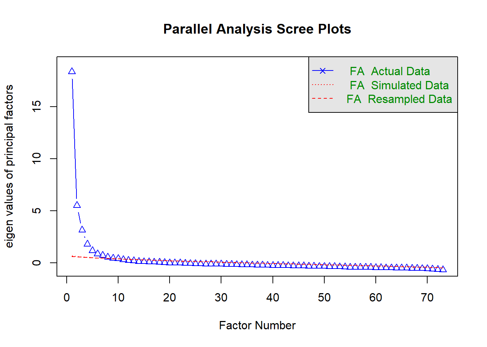

Portfolios 4
Qilin Zhang
2023-04-20
##EFA and CFA
Here I included an example for the EFA and CFA analyses I did in the past. We collected some data for a scale development project and most of this document is just me playing around with EFA, trying to trim item based on their fits. I removed a lot of redundant codes for the sake of clarity, but I know EFA out put can still be massive something. You can scroll directly to the bottom if you are interested in the CFA graph.
###cleaning
##rename
data_cleaned <- data
#prepare dataframe for different scales
DGS <- data_cleaned[grep("DGS_1",colnames(data_cleaned)):grep("DGS_75",colnames(data_cleaned))]
DGS <- DGS[,-c(grep("DGS_31",colnames(DGS)),grep("DGS_53",colnames(DGS)))] #delete attention check questions
#HEXACO
HEXACO_C <- data_cleaned[grep("HEXACO_C_1",colnames(data_cleaned)):grep("HEXACO_C_10",colnames(data_cleaned))]###EFA
##descriptive analysis for all items
DGS_descriptive <- describe(DGS)
##EFA for DGS
#Kaiser Criterion
ev<- eigen(cor(DGS))
ev$values## [1] 19.0318239 6.3198512 3.9926260 2.5800469 1.9787011 1.6600957
## [7] 1.5261047 1.3461440 1.2348699 1.1855627 1.0920939 0.9943690
## [13] 0.9824023 0.9510660 0.9259315 0.8584358 0.8376911 0.8250494
## [19] 0.7977773 0.7638931 0.7497018 0.7182524 0.7015026 0.6766099
## [25] 0.6700548 0.6553546 0.6497223 0.6336491 0.6143649 0.6027079
## [31] 0.5803834 0.5658368 0.5629791 0.5400468 0.5366105 0.5239070
## [37] 0.5156545 0.5146725 0.4968453 0.4854650 0.4728290 0.4655129
## [43] 0.4546234 0.4500546 0.4387283 0.4280032 0.4190474 0.4031488
## [49] 0.3983292 0.3848604 0.3774682 0.3647425 0.3601932 0.3568706
## [55] 0.3438176 0.3409922 0.3327193 0.3215375 0.3171784 0.3162071
## [61] 0.3016153 0.2971309 0.2920561 0.2818003 0.2713670 0.2632071
## [67] 0.2614514 0.2524048 0.2506031 0.2342443 0.2295652 0.2279892
## [73] 0.2108449sum(ev$values > 1)## [1] 11sum(ev$values > .7)## [1] 23#scree plot and parallel analysis
scree(DGS, pc=FALSE)fa.parallel(DGS,
fm="ml",
fa="fa")
## Parallel analysis suggests that the number of factors = 10 and the number of components = NA6 factors concise model
# try to trim out behavioral items and create 6 factors
DGS_fit_6C <- DGS %>%
select(c(
DGS_4,DGS_12,DGS_15,DGS_17,DGS_18,DGS_19,DGS_22,DGS_30,DGS_32,DGS_33,DGS_34,DGS_36,DGS_49,DGS_56,DGS_57,DGS_58,DGS_60,DGS_61,DGS_63,DGS_74,DGS_75,
DGS_5,DGS_10,DGS_26,DGS_41,DGS_54,DGS_69,DGS_72,
DGS_9,DGS_20,DGS_27,DGS_29,DGS_46,DGS_52,
DGS_2,DGS_11,DGS_28,DGS_35,DGS_48,DGS_68,
DGS_1,DGS_21,DGS_44,DGS_65,
DGS_6,DGS_38,DGS_39,DGS_45,DGS_67,DGS_70,DGS_71
))
# 64 59 47(poor conceptual fit) 55(mixed conceptual fit) 23(poor conceptual fit),37 poor fitting
# DGS_13,DGS_73,DGS_16,DGS_40,DGS_42,DGS_43 out due to low loadings (<0.3)
EFA_fit_6C <- fa(DGS_fit_6C,
nfactors = 6,
rotate = "oblimin",
fm="ml")
EFA_fit_6C <- fa.sort(EFA_fit_6C)
print(EFA_fit_6C$loadings, cutoff = 0.3)##
## Loadings:
## ML1 ML4 ML6 ML5 ML3 ML2
## DGS_33 0.670
## DGS_17 0.615
## DGS_61 0.594
## DGS_18 0.582 0.309
## DGS_32 0.576
## DGS_60 0.575
## DGS_15 0.575
## DGS_75 0.572
## DGS_12 0.568
## DGS_22 0.560
## DGS_56 0.534
## DGS_4 0.531
## DGS_36 0.520
## DGS_30 0.518
## DGS_19 0.518
## DGS_49 0.508
## DGS_57 0.508 0.326
## DGS_34 0.505
## DGS_58 0.486
## DGS_63 0.482 0.349
## DGS_74 0.400
## DGS_10 0.720
## DGS_41 0.685
## DGS_26 0.574
## DGS_72 0.574
## DGS_5 0.506
## DGS_69 0.464
## DGS_54 0.423
## DGS_52 0.786
## DGS_29 0.775
## DGS_9 0.314 0.557
## DGS_27 0.530
## DGS_46 0.315 0.478
## DGS_20 0.391
## DGS_21 0.820
## DGS_65 0.805
## DGS_1 0.555
## DGS_44 0.515
## DGS_38 0.611
## DGS_70 0.597
## DGS_71 0.564
## DGS_6 0.552
## DGS_39 0.552
## DGS_67 0.306 0.532
## DGS_45 0.518
## DGS_48 0.660
## DGS_11 0.410 0.573
## DGS_28 0.541
## DGS_2 0.400 0.513
## DGS_35 0.312 0.506
## DGS_68 0.503
##
## ML1 ML4 ML6 ML5 ML3 ML2
## SS loadings 6.991 3.526 2.812 2.465 2.604 2.461
## Proportion Var 0.137 0.069 0.055 0.048 0.051 0.048
## Cumulative Var 0.137 0.206 0.261 0.310 0.361 0.409fa.diagram(EFA_fit_6C,
sort = T,
rsize = 0.5,
cex = 0.8,
main = "visualization of 6 factors structure")#initial communalities
smc(DGS_fit_6C)## DGS_4 DGS_12 DGS_15 DGS_17 DGS_18 DGS_19 DGS_22 DGS_30
## 0.3717264 0.5122724 0.5898355 0.5844865 0.5986226 0.4452442 0.3191697 0.5500382
## DGS_32 DGS_33 DGS_34 DGS_36 DGS_49 DGS_56 DGS_57 DGS_58
## 0.4941695 0.6048308 0.3925569 0.5453989 0.5646836 0.5750949 0.5697526 0.5377061
## DGS_60 DGS_61 DGS_63 DGS_74 DGS_75 DGS_5 DGS_10 DGS_26
## 0.5706765 0.6198701 0.5268735 0.4633078 0.4017567 0.5244806 0.6598491 0.5097576
## DGS_41 DGS_54 DGS_69 DGS_72 DGS_9 DGS_20 DGS_27 DGS_29
## 0.5107693 0.3496220 0.6005216 0.3930415 0.5635058 0.4312652 0.5371085 0.6055939
## DGS_46 DGS_52 DGS_2 DGS_11 DGS_28 DGS_35 DGS_48 DGS_68
## 0.5934870 0.5733477 0.5384551 0.5187069 0.5843299 0.5292241 0.4714856 0.5523507
## DGS_1 DGS_21 DGS_44 DGS_65 DGS_6 DGS_38 DGS_39 DGS_45
## 0.3470574 0.6237796 0.6030988 0.5436859 0.5433970 0.4912798 0.5501040 0.4968994
## DGS_67 DGS_70 DGS_71
## 0.4966414 0.4096397 0.4702984#fit
EFA_fit_6C$rms # Root mean square of the residuals (lower the better)## [1] 0.02935314EFA_fit_6C$RMSEA # root mean squared error of approximation (lower the better)## RMSEA lower upper confidence
## 0.04851368 0.04653088 0.05059485 0.90000000EFA_fit_6C$TLI # tucker lewis index## [1] 0.88236721- ((EFA_fit_6C$STATISTIC-EFA_fit_6C$dof)/
(EFA_fit_6C$null.chisq-EFA_fit_6C$null.dof)) #CFI## [1] 0.9096859{DGS_2M_model <- '
S1 =~ DGS_12+DGS_15+DGS_17+DGS_18+DGS_19+DGS_30+DGS_32+DGS_33+DGS_34+DGS_36+DGS_49+DGS_56+DGS_57+DGS_58+DGS_60+DGS_61+DGS_63+DGS_75
S2 =~ DGS_5+DGS_10+DGS_26+DGS_41+DGS_54+DGS_69+DGS_72
S3 =~ DGS_9+DGS_27+DGS_29+DGS_46+DGS_52
S4 =~ DGS_28+DGS_35+DGS_48+DGS_68
S5 =~ DGS_21+DGS_44+DGS_65
S6 =~ DGS_6+DGS_38+DGS_39+DGS_70+DGS_71
F1 =~ S1 + S3 + S2 + S5
F2 =~ S4 + S6
'}
DGS_2M_fit <- cfa(
model = DGS_2M_model,
data = DGS,
std.lv = TRUE)
summary(DGS_2M_fit,
standardized = TRUE,
rsquare = TRUE,
fit.measures=TRUE)## lavaan 0.6.16 ended normally after 95 iterations
##
## Estimator ML
## Optimization method NLMINB
## Number of model parameters 91
##
## Number of observations 836
##
## Model Test User Model:
##
## Test statistic 4152.103
## Degrees of freedom 812
## P-value (Chi-square) 0.000
##
## Model Test Baseline Model:
##
## Test statistic 19205.630
## Degrees of freedom 861
## P-value 0.000
##
## User Model versus Baseline Model:
##
## Comparative Fit Index (CFI) 0.818
## Tucker-Lewis Index (TLI) 0.807
##
## Loglikelihood and Information Criteria:
##
## Loglikelihood user model (H0) -52995.376
## Loglikelihood unrestricted model (H1) NA
##
## Akaike (AIC) 106172.753
## Bayesian (BIC) 106603.058
## Sample-size adjusted Bayesian (SABIC) 106314.073
##
## Root Mean Square Error of Approximation:
##
## RMSEA 0.070
## 90 Percent confidence interval - lower 0.068
## 90 Percent confidence interval - upper 0.072
## P-value H_0: RMSEA <= 0.050 0.000
## P-value H_0: RMSEA >= 0.080 0.000
##
## Standardized Root Mean Square Residual:
##
## SRMR 0.090
##
## Parameter Estimates:
##
## Standard errors Standard
## Information Expected
## Information saturated (h1) model Structured
##
## Latent Variables:
## Estimate Std.Err z-value P(>|z|) Std.lv Std.all
## S1 =~
## DGS_12 0.134 0.045 2.980 0.003 0.626 0.607
## DGS_15 0.172 0.058 2.993 0.003 0.807 0.721
## DGS_17 0.179 0.060 2.994 0.003 0.838 0.734
## DGS_18 0.217 0.072 2.993 0.003 1.016 0.724
## DGS_19 0.148 0.050 2.975 0.003 0.692 0.578
## DGS_30 0.192 0.064 2.993 0.003 0.902 0.722
## DGS_32 0.180 0.060 2.988 0.003 0.842 0.672
## DGS_33 0.184 0.061 2.997 0.003 0.860 0.768
## DGS_34 0.117 0.040 2.951 0.003 0.550 0.473
## DGS_36 0.192 0.064 2.992 0.003 0.900 0.703
## DGS_49 0.195 0.065 2.985 0.003 0.912 0.641
## DGS_56 0.197 0.066 2.988 0.003 0.922 0.671
## DGS_57 0.168 0.056 2.991 0.003 0.786 0.699
## DGS_58 0.142 0.048 2.983 0.003 0.667 0.627
## DGS_60 0.191 0.064 2.993 0.003 0.897 0.713
## DGS_61 0.198 0.066 2.998 0.003 0.927 0.781
## DGS_63 0.148 0.050 2.982 0.003 0.694 0.619
## DGS_75 0.155 0.052 2.974 0.003 0.728 0.570
## S2 =~
## DGS_5 0.713 0.036 19.668 0.000 0.939 0.674
## DGS_10 0.836 0.033 25.258 0.000 1.101 0.838
## DGS_26 0.670 0.032 21.172 0.000 0.882 0.719
## DGS_41 0.763 0.037 20.664 0.000 1.004 0.704
## DGS_54 0.408 0.032 12.762 0.000 0.538 0.455
## DGS_69 0.727 0.033 21.769 0.000 0.957 0.736
## DGS_72 0.634 0.041 15.629 0.000 0.835 0.549
## S3 =~
## DGS_9 0.647 0.036 17.826 0.000 0.972 0.670
## DGS_27 0.729 0.037 19.773 0.000 1.096 0.749
## DGS_29 0.863 0.044 19.668 0.000 1.296 0.744
## DGS_46 0.691 0.034 20.086 0.000 1.038 0.762
## DGS_52 0.747 0.041 18.139 0.000 1.122 0.683
## S4 =~
## DGS_28 0.992 0.056 17.677 0.000 1.319 0.823
## DGS_35 0.896 0.053 16.781 0.000 1.191 0.753
## DGS_48 0.674 0.047 14.266 0.000 0.896 0.602
## DGS_68 0.991 0.057 17.364 0.000 1.318 0.796
## S5 =~
## DGS_21 1.172 0.048 24.530 0.000 1.495 0.874
## DGS_44 0.810 0.040 20.499 0.000 1.034 0.710
## DGS_65 1.010 0.047 21.295 0.000 1.289 0.734
## S6 =~
## DGS_6 0.680 0.090 7.564 0.000 1.236 0.794
## DGS_38 0.401 0.056 7.140 0.000 0.730 0.551
## DGS_39 0.665 0.088 7.546 0.000 1.210 0.751
## DGS_70 0.412 0.061 6.726 0.000 0.749 0.447
## DGS_71 0.370 0.053 6.996 0.000 0.673 0.509
## F1 =~
## S1 4.578 1.597 2.866 0.004 0.977 0.977
## S3 1.121 0.076 14.777 0.000 0.746 0.746
## S2 0.857 0.058 14.831 0.000 0.651 0.651
## S5 0.793 0.057 13.949 0.000 0.621 0.621
## F2 =~
## S4 0.876 0.097 9.070 0.000 0.659 0.659
## S6 1.520 0.278 5.472 0.000 0.835 0.835
##
## Covariances:
## Estimate Std.Err z-value P(>|z|) Std.lv Std.all
## F1 ~~
## F2 0.517 0.038 13.444 0.000 0.517 0.517
##
## Variances:
## Estimate Std.Err z-value P(>|z|) Std.lv Std.all
## .DGS_12 0.673 0.034 19.774 0.000 0.673 0.632
## .DGS_15 0.602 0.031 19.197 0.000 0.602 0.480
## .DGS_17 0.600 0.031 19.095 0.000 0.600 0.461
## .DGS_18 0.938 0.049 19.177 0.000 0.938 0.476
## .DGS_19 0.953 0.048 19.867 0.000 0.953 0.666
## .DGS_30 0.748 0.039 19.190 0.000 0.748 0.479
## .DGS_32 0.860 0.044 19.495 0.000 0.860 0.548
## .DGS_33 0.515 0.027 18.787 0.000 0.515 0.410
## .DGS_34 1.047 0.052 20.113 0.000 1.047 0.776
## .DGS_36 0.830 0.043 19.319 0.000 0.830 0.506
## .DGS_49 1.192 0.061 19.640 0.000 1.192 0.589
## .DGS_56 1.041 0.053 19.503 0.000 1.041 0.550
## .DGS_57 0.646 0.033 19.342 0.000 0.646 0.511
## .DGS_58 0.687 0.035 19.698 0.000 0.687 0.607
## .DGS_60 0.777 0.040 19.252 0.000 0.777 0.492
## .DGS_61 0.549 0.029 18.641 0.000 0.549 0.390
## .DGS_63 0.775 0.039 19.729 0.000 0.775 0.617
## .DGS_75 1.099 0.055 19.889 0.000 1.099 0.675
## .DGS_5 1.060 0.058 18.213 0.000 1.060 0.546
## .DGS_10 0.515 0.037 14.092 0.000 0.515 0.298
## .DGS_26 0.729 0.041 17.569 0.000 0.729 0.484
## .DGS_41 1.029 0.058 17.808 0.000 1.029 0.505
## .DGS_54 1.110 0.056 19.754 0.000 1.110 0.793
## .DGS_69 0.775 0.045 17.254 0.000 0.775 0.458
## .DGS_72 1.619 0.084 19.299 0.000 1.619 0.699
## .DGS_9 1.160 0.065 17.888 0.000 1.160 0.551
## .DGS_27 0.942 0.057 16.423 0.000 0.942 0.440
## .DGS_29 1.354 0.082 16.530 0.000 1.354 0.446
## .DGS_46 0.780 0.049 16.078 0.000 0.780 0.420
## .DGS_52 1.443 0.081 17.708 0.000 1.443 0.534
## .DGS_28 0.830 0.064 12.956 0.000 0.830 0.323
## .DGS_35 1.085 0.069 15.806 0.000 1.085 0.433
## .DGS_48 1.416 0.077 18.492 0.000 1.416 0.638
## .DGS_68 1.005 0.071 14.237 0.000 1.005 0.367
## .DGS_21 0.688 0.080 8.612 0.000 0.688 0.235
## .DGS_44 1.054 0.064 16.464 0.000 1.054 0.497
## .DGS_65 1.419 0.090 15.728 0.000 1.419 0.461
## .DGS_6 0.897 0.073 12.320 0.000 0.897 0.370
## .DGS_38 1.224 0.066 18.435 0.000 1.224 0.697
## .DGS_39 1.129 0.080 14.148 0.000 1.129 0.435
## .DGS_70 2.249 0.116 19.307 0.000 2.249 0.801
## .DGS_71 1.295 0.069 18.839 0.000 1.295 0.741
## .S1 1.000 0.046 0.046
## .S2 1.000 0.577 0.577
## .S3 1.000 0.443 0.443
## .S4 1.000 0.566 0.566
## .S5 1.000 0.614 0.614
## .S6 1.000 0.302 0.302
## F1 1.000 1.000 1.000
## F2 1.000 1.000 1.000
##
## R-Square:
## Estimate
## DGS_12 0.368
## DGS_15 0.520
## DGS_17 0.539
## DGS_18 0.524
## DGS_19 0.334
## DGS_30 0.521
## DGS_32 0.452
## DGS_33 0.590
## DGS_34 0.224
## DGS_36 0.494
## DGS_49 0.411
## DGS_56 0.450
## DGS_57 0.489
## DGS_58 0.393
## DGS_60 0.508
## DGS_61 0.610
## DGS_63 0.383
## DGS_75 0.325
## DGS_5 0.454
## DGS_10 0.702
## DGS_26 0.516
## DGS_41 0.495
## DGS_54 0.207
## DGS_69 0.542
## DGS_72 0.301
## DGS_9 0.449
## DGS_27 0.560
## DGS_29 0.554
## DGS_46 0.580
## DGS_52 0.466
## DGS_28 0.677
## DGS_35 0.567
## DGS_48 0.362
## DGS_68 0.633
## DGS_21 0.765
## DGS_44 0.503
## DGS_65 0.539
## DGS_6 0.630
## DGS_38 0.303
## DGS_39 0.565
## DGS_70 0.199
## DGS_71 0.259
## S1 0.954
## S2 0.423
## S3 0.557
## S4 0.434
## S5 0.386
## S6 0.698#modificationindices(DGS_2M_fit,sort = T)
semPaths(DGS_2M_fit,
whatLabels = "std",
what = "std",
layout = "tree2",
edge.label.cex = 1)